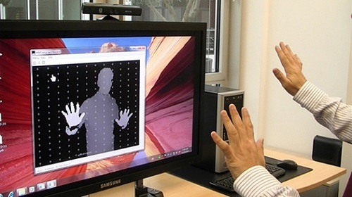

微軟開源 Kinect 挽留開發者

◎本文原載 Linux Pilot，原文章連結按此。
Kinect 作為新一代的體感設備，為了吸引開發者，微軟早在 2011 年就已經發布了官方 SDK，這次微軟更進一步，宣布將根據開源授權，開放 Kinect 的部分程式碼，意圖挽留正在流失的開發者。

微軟自 Windows 8 起加入了觸控功能，下一步計畫便是讓 Kinect 體感控製器，成為 PC 上的標準用戶界面設備。微軟在推出 Kinect 的當初，只想到利用它來控制 Xbox 360，但開源社區的目光更長遠，一開始已經看到 Kinect 將會是下一代的裝置輸入標準，因此就開發出開源的相關項目，包括 OpenKinect 和 OpenNI SDK，並開發了開源的 Kinect 驅動程式 SensorKinect，自此以後 Kinect 便可以在 Xbox 360 以外的平台下使用了。
微軟眼見形勢有變，於是後來也推出了官方 SDK 。但微軟的 Kinect SDK 只能在 Windows 7 或以上的平台使用，OpenNI SDK 卻可以在 Linux 、 Mac OS X 和 Windows 上使用，硬體架構更支援 x86 和 ARM 平台，令 OpenNI SDK 成為了目前被最廣泛使用和認可的開源 Kinect 函式庫。OpenNI SDK 還有一個微軟了官方 SDK 也做不到的功能，就是支援 Kinect 以外的其他體感裝置，例如華碩的 Xtion Pro 和 Xtion Pro Live ，從一開始就是以針對 OpenNI 而開發的。
微軟深知長此下去，它將會喪失對 Kinect 的主導權，這不但是面子問題，也是利益的問題，為挽留開發者，微軟終於再度出招，2013 年 3 月初微軟 Kinect for Windows 開發者社區經理 Ben Lower 宣布中稱，通過 Apache 2.0 開源協議提供部分程式碼，包括用於面部追蹤、骨骼查看器和連續手勢的程式碼。這些程式碼由 C# 、 C++ 和 VB 編寫。微軟表示這樣做是為了讓開發者有機會重用目前的 Kinect 程式碼，並幫助微軟研究如何改進它們。此外微軟還建立了一個 Kinect for Windows 開發者社區，為有興趣開發 PC 平台體感和語音控制應用的開發者提供技術支援。不論OpenNI 今後發展如何，它的出現至少令微軟的策略有所改變，這正是開源的力量。